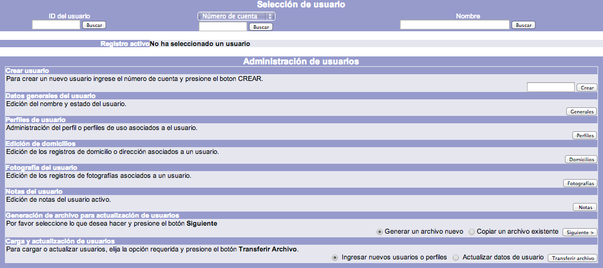
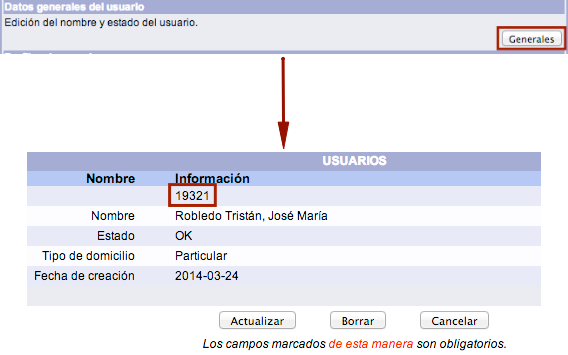
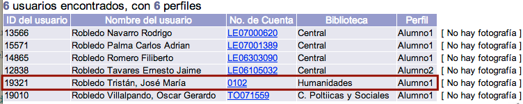
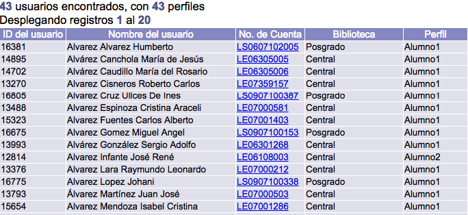
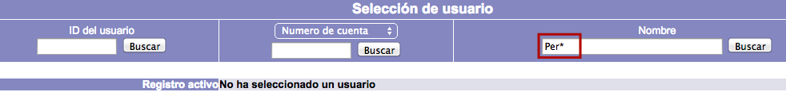
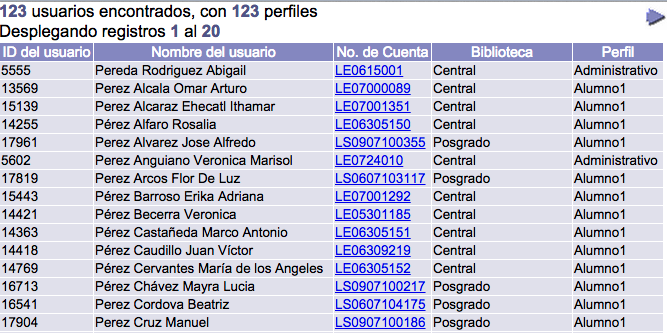
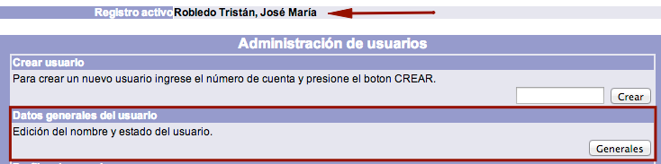

Esta sección del módulo está relacionada con la administración de usuarios y en ella se ejecutan las funciones de búsqueda, creación, modificación y borrado de los mismos.
Además, de forma adicional, también es posible vincular una fotografía al usuario, o crear notas internas informativas para su uso por parte de los operadores del módulo.

Independiente de esta sección es Despliegue del usuario, cuyo uso principal es mostrar la información de circulación global vinculada al usuario seleccionado.
Búsqueda de usuarios
Desde la pantalla de administración de usuarios es posible buscar registros de usuarios por: ID del usuario, número de cuenta, identificador alterno y nombre. Estas búsquedas tienen como objetivo tener como registro activo al usuario requerido, para después poder desplegar, modificar o borrar su información.
Búsqueda por ID del usuario
El ID del usuario es el número asignado de forma automática por el sistema a cada usuario. Este número es único e irrepetible, por lo que no puede ser utilizado para otro usuario y no puede ser modificado por los operadores del módulo.
El ID del usuario no aparece en la ficha de introducción de datos. Para verlo, es necesario acceder a la sección Datos generales del usuario, mediante el botón Generales.

El procedimiento a seguir es el siguiente:
- Hacer clic sobre la opción Usuarios de la barra de herramientas del módulo.

- Escribir el ID del usuario en el campo de texto correspondiente de la sección Selección de usuario. Hacer clic en el botón Buscar.

- El sistema muestra el nombre del usuario como registro activo.

Búsqueda por número de cuenta e identificador alterno
El número de cuenta es el dato principal por el cual es identificado el usuario para poder registrarle operaciones en el módulo de Circulación (préstamos, devoluciones, etc.). Además, es el que usa el propio usuario para ingresar a Servicios al usuario. Puede ser alfanumérico y tener una longitud de hasta 320 caracteres. Por otro lado, debe ser único; es decir, dos personas diferentes no pueden tener el mismo número de cuenta. Cabe mencionar que es sensible a mayúsculas y minúsculas (el número de cuenta PRUEBA es diferente al número de cuenta prueba).
En cuanto al identificador alterno, como su nombre indica, es otro elemento complementario que puede ser usado para identificar a un usuario. También puede ser alfanumérico, tener una longitud de 320 caracteres y deber ser único. Su uso es opcional, por lo que es responsabilidad de la institución decidir si su introducción es obligatoria o no.
El procedimiento a seguir es el siguiente: (Tomamos como ejemplo una búsqueda por número de cuenta)
- Hacer clic sobre la opción Usuarios de la barra de herramientas del módulo.
- Seleccionar la opción de búsqueda deseada y escribir el dato en el campo de texto correspondiente de la sección Selección de usuario. Hacer clic en el botón Buscar.

- El sistema muestra el nombre del usuario como registro activo.
Búsqueda por nombre
En este sentido, en primer lugar, la institución debe elegir la forma de escritura que va a ser utilizada para registrar los nombres de sus usuarios, ya que el método de búsqueda que lleva a cabo el sistema es alfabético.
Por ejemplo, si se decide registrar los nombres con el orden Apellido(s), Nombre(s) no será posible hacer búsquedas comenzando con el nombre del usuario (como María, Juan, José) al no ser éste el primer dato del campo. Ahora bien, no es necesario introducir el nombre completo del usuario para ejecutar la búsqueda, bastando con una parte del término.
El procedimiento a seguir es el siguiente:
- Hacer clic sobre la opción Usuarios de la barra de herramientas del módulo.
- Escribir el nombre del usuario en el campo de texto correspondiente de la sección Selección de usuario. Hacer clic en el botón Buscar.

- Se despliega una ventana emergente con la lista de usuarios coincidentes con los términos introducidos. Hacer clic sobre el número de cuenta deseado.

- El sistema transfiere la información a la pantalla anterior y muestra el nombre del usuario como registro activo.
Uso de comodines en búsqueda por nombre
En esta opción de búsqueda de usuarios, es posible usar el símbolo de truncamiento ***** (asterisco) como comodín cuando se tengan dudas sobre el término que se desea encontrar, o bien cuando se quiera llevar a cabo una búsqueda amplia de usuarios.
Los comodines pueden utilizarse de dos formas:
- Colocados al comienzo de la raíz del término.


- Colocados al final de la raíz del término.


Consulta y edición de datos generales del usuario
Es posible realizar consultas y cambios en algunas de las informaciones ya recogidas en el registro del usuario.
El procedimiento a seguir es el siguiente:
- Hacer clic sobre la opción Usuarios de la barra de herramientas del módulo.
- Buscar al usuario en cuestión por ID del usuario, número de cuenta / identificador alterno o nombre.
- Teniendo al usuario como registro activo, hacer clic en el botón Generales de la sección Datos generales del usuario.

- El sistema muestra la pantalla de USUARIOS. Hacer clic sobre el botón Actualizar, en caso de que se necesiten modificar los datos de alguno de los campos permitidos (nombre, estado y tipo de domicilio). Para guardar los cambios, dar clic de nuevo en el botón Actualizar.